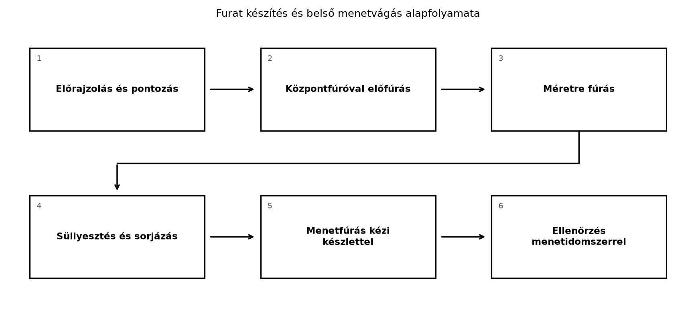

Egy autószerelő műhelyben gyakran kell gyári alkatrész helyett vagy mellett egyszerű illesztőlemezt, tartókonzolt, takarólemezt, kábelrögzítőt készíteni, mert az adott járművön a sorozatgyártású elem nem fér el, vagy a régi elkorrodált. Ilyenkor a munkadarabot nem szabad „szemre” levágni és úgy fúrni, hogy a furat ferdén álljon. Ha a furat nem merőleges, a csavar ferde, a menet beszorul, a kötés nem fekszik fel, és a rezgés miatt később meglazul. Ugyanez a helyzet akkor is, ha egy sérült belső menetet kell javítani: ha rossz átmérőjű fúróval készíted elő a menetbetét furatát, a javított menet nem tartja majd a csavart a gyártó által előírt szorítóerővel. Ebből a fejezetből megtanulod azokat a kézi megmunkálási műveleteket, amelyekkel egy egyszerű lemez- vagy rúd-alkatrészt méretpontosan, balesetmentesen le tudsz gyártani és ellenőrizni.
Képzelj el egy satuba fogott, 3 mm vastag acéllemezt. A felületén vékony, éles vonalak jelölik a levágandó külső kontúrt, egy pontozóütés pedig a fúrandó furat középpontját. A munkadarab előtt egy sor szerszám fekszik: előrajzoló tű, acél vonalzó, pontozó, fémfűrész, lapos- és félgömbölyű reszelő, süllyesztőfúró, kézi menetfúrókészlet és egy doboz vágóolaj. A tanuló először a lemez szélét választja bázisfelületnek, ahhoz méri a furatok helyét, és a satuban úgy állítja be a munkadarabot, hogy a fúró pontosan a pontozott középpontba süllyedjen. Ez a „rajz–munkadarab–szerszám” hármas ugyanazt a logikát követi, mint később a járművön végzett mérés és javítás: először tájékozódsz, azután vágni, fúrni, alakítani csak akkor kezdesz.
Definíció. Az előrajzolás olyan kézi jelölési művelet, amelynek során a munkadarab felületére a rajz méretei alapján felvisszük a megmunkálás határait, a furatok középpontját és a hajlítási vonalakat.
A jó előrajzolás alapja a bázisfelület vagy bázisél kijelölése: ez egy olyan sík, él vagy furat, amelyből a többi méretet mérjük. A bázisfelületre mindig merőlegesnek vagy párhuzamosnak kell lennie a munkadarab felfekvő síkjának. Ha például a lemez egyik hosszabbik élét választod bázisnak, minden furatközéppontot ettől az éltől mérj; ha a levágott él ferde, akkor a rossz élhez mért „pontos” furatok is rossz helyre kerülnek.
A gyakori eszközök: acél vonalzó, derékszög, előrajzoló tű, pontozó, körző, mérőhasáb. A pontozóütés azért fontos, mert a fúró hegye a kis kúpos mélyedésben megvezetődik, így a fúró nem „vándorol el” a kívánt középpontból. A rajzolóvonalka mentén a pontozást enyhe kalapácsütéssel, a pontozó hegyét a vonal metszéspontjára helyezve végezzük.
A furatközéppont a báziséltől derékszöggel felvett két vonal metszéspontja. A pontozót előbb ferdén ráállítjuk, hogy a hegye látható legyen a metszésponton, majd függőlegesre állítva enyhe kalapácsütéssel kis kúpos mélyedést ütünk, amely a fúró csúcsát megvezeti. A HTML-változatban a lépések egyenként léptethetők.
A lemezek és rudak darabolására több kézi eljárás létezik; a választás az anyagvastagságtól és a darab alakjától függ.
Figyelem. Vésővel dolgozva a lepattanó forgács és az elrepülő anyagdarab szemsérülést okozhat. Mindig viselj zárható védőszemüveget, és ellenőrizd, hogy a kalapács nyele épen rögzül-e a fejben. A lemezolló vágott éle is vágási sérülést okozhat, ezért a munkadarabot a vágás után azonnal sorjázd.
A lemezalakítás célja gyakran egy meghatározott szögbe hajlított tartó vagy fedél elkészítése. A hajlítás előtt az anyagot egyengetni kell: a hullámos, elgörbült lemezt sima felületen, műanyag- vagy ólomkalapáccsal ütögetjük, hogy a további műveletekhez sík felületet kapjunk. Acéllemezt acélkalapáccsal is egyengethetünk, de óvatosan, mert a túl erős ütések helyi nyúlást okoznak.
A hajlítás közben az anyag külső oldala megnyúlik, a belső oldala összenyomódik. A két szélső réteg között húzódik a semleges szál, amelynek hossza hajlításkor közelítőleg változatlan marad. Ezért a lemez kiterített hosszát nem a külső méretekből, hanem a semleges szál ívéből kell számolni.
Összefüggés. Ha egy vastagságú lemezt belső sugárral, 90°-ban hajlítunk, a semleges szál sugarát közelítőleg az
képlettel vehetjük fel. A 90°-os ív hossza a teljes kör kerületének negyede:
A teljes kiterített hossz:
ahol és a semleges szál egyenes szakaszai a hajlítási ív kezdetéig, illetve végétől a darab végéig. Ez tanulási közelítés; a gyártási gyakorlatban a semleges szál helyzetét anyagminőség és hajlítási sugár szerint pontosító tényezővel korrigálják (ellenőrizendő: az adott anyagra és szerszámra vonatkozó táblázat).
Az ábra az alábbi 1. kidolgozott példa adatait mutatja ( mm, mm, mm, mm): a semleges szál sugara 6,5 mm, az ív hossza kb. 10,2 mm, a kiterített hossz 75,2 mm, míg a külső méretek összege (48 + 33 = 81 mm) túl hosszú darabot adna. A HTML-kalkulátorban a vastagság, a belső sugár, a hajlítási szög és az egyenes szakaszok állíthatók.
A kézi hajlítást leggyakrabban satuban, hajlítóék vagy hajlítóvas segítségével végezzük. A hajlítási vonalat pontosan előrajzoljuk, a munkadarabot úgy fogjuk be, hogy a hajlítási él a satupofa élére essen, majd egyenletes erővel hajlítunk. A rugalmas visszarugózás miatt a kívánt szöget általában kissé túl kell hajlítani; az ellenőrzést derékszöggel vagy szögmérővel végezzük.
Reszelés alatt a felesleges anyag vékony rétegben, apró forgácsok leválasztásával történő leválasztását értjük kézi reszelővel. A reszelő alakja szerint lapos, félgömbölyű, kerek, háromszögletes; fogazása lehet durva, közepes, finom és nagyon finom. A fogazás kiválasztása: nagy anyagleválasztáshoz durva, készre munkáláshoz finom fogazás.
A reszelő használatának alapvető munkaszabályai:
Fűrészelés fémfűrésszel a leggyakoribb kézi daraboló művelet. A fűrészlapot úgy választjuk meg, hogy a falvastagságban mindig legalább 2-3 fog essen egyidejűleg a vágásba. Vékony lemezhez tehát finom fogazású lapot használj; vastag rúdhoz durvábbat is lehet. A fűrészlap fogai előrefelé vágjanak; a lapot a keretben annyira feszítsük meg, hogy ne hajoljon el, de ne is pattanjon el. A vágást enyhe, egyenletes nyomással, hosszú húzásokkal végezzük, és a vágás végén csökkentsük a nyomást, hogy a lap ne csípődjön be.
A felső sor a fenti munkaszabályokat mutatja: munkadarab könyökmagasságban, reszelő ép nyéllel, a fűrészlap fogai előre (a nyéltől el) mutatnak, vékony falhoz finom fogazás kell; az alsó sor a megfelelő hibákat.
A fúrás a kézi megmunkálás legnagyobb baleseti kockázatú művelete, mert forgó szerszámmal dolgozunk. A fúrógépen a munkadarabot satuban vagy fúróbefogóban rögzítsük; kis alkatrészt soha ne tartsunk kézzel.
Definíció. A fúrás forgácsoló eljárás, amelynek során kétélű, spirálhornyú csigafúróval hengeres furatot készítünk. A fúró csúcsa központozó hatást fejt ki, a főforgácsoló élek a csúcs mellett, a mellékvágó él a paláston dolgozik. A furat pontosabb, ha a végső átmérő előtt kisebb fúróval előfúrunk.
A fúrási fordulatszám a forgácsolósebességtől és a fúró átmérőjétől függ:
ahol a fordulatszám 1/min-ben, a forgácsolósebesség m/min-ben, pedig a fúró átmérője méterben.
A következő táblázat tájékoztató értékeket ad HSS fúróval végzett munkához:
| Anyag | Forgácsolósebesség, (m/min) |
|---|---|
| Szerkezeti acél | 20–30 |
| Ötvözött acél | 10–20 |
| Öntöttvas | 15–25 |
| Alumínium | 40–80 |
| Sárgaréz, réz | 30–60 |
Az értékek tanulási példák (ellenőrizendő: a felhasznált fúró és anyag gyártói adatai).
Mélyebb furatnál a fúrót többször húzzuk vissza, hogy a forgács kihulljon, és a hűtő-kenő anyag a vágási zónába jusson. Acél fúrásakor kenőfolyadékot, alumíniumnál petróleumot vagy megfelelő emulziót is használhatunk; a választást a szerszám- és anyaggyártói utasítás szerint kell elvégezni.
Süllyesztés alatt a furat kúpos vagy hengeres bővítését értjük, például süllyesztett fejű csavarok felfekvő felületének kialakítására. Dörzsárazással a fúrt furat mérettűrését és felületi minőségét finomítjuk: a dörzsár kis anyagréteget vág le, és a furatot pontos hengeres alakra hozza. A dörzsár furatból történő kihúzása közben ne forgassuk visszafelé, mert ez a vágóél csorbulását okozhatja.

A folyamatábra azt mutatja, hogy a pontozott középpont, a központfúró és a méretre fúró furat egymásra épül. Ha bármelyik lépést kihagyod, a menetfúró ferde, szoruló vagy szakadt menetet adhat.
A belső menet készítése háromrészes menetfúrókészlettel történik: elő-, közép- és simítófúróval. Az előfúró erősen kúpos, a simító állítja be a végső menetprofilt. A menetfúrót kézi menetfúróhajtóval forgatjuk, és acélban, rozsdamentes acélban vágóolajat használunk.
A menetfúró-méret, vagyis a belső menet előtti furat átmérője közelítőleg:
ahol a menet névleges átmérője, a menetemelkedés. Például M10x1,5 esetén . Ez tanulási közelítés; a pontos furatméretet az anyag és a szabványos menet szerint a szerszámgyártói táblázatból kell kikeresni.
Külső menetet menetvágó (gömbvas) készít: a rúd átmérőjét a menet névleges átmérőjénél kissé kisebbre választjuk (közelítőleg , például M10x1,5-höz kb. 9,85 mm; ellenőrizendő: a szerszámgyártói táblázat). A rúd végét letörjük, a menetvágót merőlegesen indítjuk, és fél fordulatonként visszaforgatjuk forgácstörésre.
Sérült belső menet javítása menetbetéttel (például típus szerint „huzalbetét” vagy „javítóbetét”, a gyártó neve szerint változik) a következő logikával történik:
Recept – belső menet vágása kézi menetfúróval.
A menetfúró könnyen eltörik, ha ferde, ha túl kicsi a furat, ha hajlító- vagy csavaró igénybevétel éri, vagy ha kenés nélkül dolgozunk. A törött menetfúró eltávolítása nehéz, ezért a megelőzés fontosabb.
Az ábra felső sora a háromrészes készletet (a vágókúp az előfúrótól a simítófúróig rövidül; jelölésük 1–3 gyűrű), a menetfúró-hajtót és a menetvágót, középső sora a recept lépéseit (Ø8,5 mm-es furat, süllyesztés, előfúró merőlegesen, ½ fordulat előre – ¼ vissza, közép- és simítófúró, próbacsavar), alsó sora a menetbetétes javítás négy lépését mutatja. A HTML-változatban a lépések a recept szövegével léptethetők.
Továbbvitt eredmény. Az itt megtanult derékszögű, lapos és méretpontos felületképzést, valamint a furat–menet illesztést a Kötések készítése és oldása: csavarozás, szegecselés, forrasztás, ragasztás alfejezetben használjuk fel: a csavarkötést csak akkor tudod megbízhatóan meghúzni, ha a furat merőleges, a menet tiszta, és a felfekvő felületek síkban illeszkednek.
1. példa – kiterített hossz hajlításhoz.
Egy 3 mm vastag acéllemezt 90°-ban kell hajlítani. A belső hajlítási
sugár
.
A semleges szál mentén mért egyenes szakaszok
és
.
Számítsd ki a kiterített hosszat.
Megoldás:
Ellenőrzés: az eredmény a két egyenes szakasz összegénél nagyobb, de a külső méretekkel nem egyenlő; nagyságrendben reális.
2. példa – fúrófordulatszám és
menetfúró-méret.
M12x1,75 belső menethez kell furatot készíteni.
a) Menetfúró-méret:
,
gyakorlatban 10,2 mm-es fúrót használunk.
b) A kiválasztott
fúróval, szerkezeti acélban
értékkel számolva a fordulatszám:
A gépen ehhez legközelebb eső beállítható értéket választjuk, például 700 1/min (ellenőrizendő: a fúrógép fokozatszáma). Az eredmény szempontjából fontos, hogy a fúró a menetfúró-méretnek megfelelő legyen, mert a 10,0 mm-es furat még éppen szűk, a 10,5 mm-es pedig már gyengíti a menetet.
3. példa – hibás megoldás.
Egy tanuló M10x1,5 menethez 8,0 mm-es fúróval fúr, mert „úgyis vág a
menetfúró”. A menetfúró az első fél fordulatnál erős ellenállást mutat,
az acél felülete felküremkedik, majd a szerszám eltörik. A hiba: a furat
átmérője
helyett kisebb, így a menetfúró a furat falát a megengedettnél jobban
gyötri. A helyes gyakorlat a menetfúró-méret előzetes kiszámítása és a
szerszámgyártói táblázat ellenőrzése.
A kézi megmunkálás ellenőrzése ugyanazt a logikát követi, mint a járműjavításban: mérd, hasonlítsd, és ha eltér, javítsd. A leggyakoribb ellenőrzések:
A mérési technikák részleteit a Mérés és ellenőrzés: tolómérő, mikrométer, mérőóra, hézagmérő, idomszerek alfejezet tartalmazza.
Egy idősebb személygépkocsi generátortartó konzolján az egyik M8-as menet kisimul, a csavar nem húzható meg. A szerelő nem akar komplett konzolt cserélni, ezért menetbetétes javítást végez. A munkalapra feljegyzi a jármű azonosítóját, a konzol anyagát és a javítókészlet típusát. A sérült menetet a készlet előírása szerint 8,3 mm-es fúróval bővíti (ellenőrizendő: a javítókészlet adata), a furatot speciális menetfúróval előkészíti, majd a betétet behelyezi. A végén próbacsavarral megbizonyosodik arról, hogy a menet a teljes hosszon egyenletesen fog. A tanulság: a menetbetét javításkor a fúró és a menetfúró méretét nem a régi menetből, hanem a javítókészlet dokumentációjából kell venni.
Munkalap – sarokmerevítő készítése: előrajzolás, hajlítás, fúrás, M6 menet vágása.
Cél: 2 mm vastag acéllemezből 90°-os sarokmerevítő készítése, egyik szárán két Ø5,0 mm-es furattal, amelyekbe gyakorlásként M6-os belső menet készül. A vékony lemezbe vágott M6-os menet csak kb. 2 menetfordulatot ad, ezért nem terhelhető kötés; valódi tartókonzolon átmenő csavart anyával, szegecsanyát vagy hegesztett anyát használunk.
Munkadarab-azonosítás: lemez anyaga S235 acél (ellenőrizendő: a tényleges anyagminőség a rajzon); méretek a műhelyrajz szerint.
Szükséges szerszámok, mérőeszközök, anyagok: előrajzoló tű, pontozó, kalapács, acél vonalzó, derékszög, fémfűrész, lemezolló, lapos reszelő, fúrógép, központfúró, Ø5,0 mm-es csigafúró, süllyesztőfúró, M6-os kézi menetfúrókészlet, menetfúróhajtó, vágóolaj, satubefogó, tolómérő, hézagmérő.
Biztonsági korlát. A feladat tanműhelyi környezetre, oktató felügyeletére és a gyártói javítási utasítás betartására vonatkozik; a megadott értékek tanulási példák.
Munkavédelmi és környezetvédelmi lépések: zárt cipő, testre simuló munkaruha; fúrásnál védőszemüveg; kesztyűt csak anyagmozgatáskor viselj, a fúrógép mellett tilos; a hajat, hosszú ujjat takard vagy rögzítsd; a fémforgácsot a kijelölt gyűjtőbe, az olajos rongyot veszélyes hulladék gyűjtőbe tedd; az emulziót és vágóolajat ne öntsd a csatornába.
Munkalépések:
Ellenőrzési pontok: a lemez mérete a rajz szerint; a hajlítási szög 90° ± 1°; a furat távolsága a báziséltől a rajzon megadott tűrésen belül; a furatok merőlegesek; a menetbe a próbacsavar kézzel, rángatás nélkül becsavarható.
Tipikus hibák ebben a feladatban: a pontozás elmaradása miatt a fúró elvándorol; a fúró fordulatszáma túl nagy, ezáltal gyorsan túlmelegszik; a menetfúrót elindításkor nem tartják merőlegesen, így ferde a menet; a hajlításnál a belső sugár túl kicsi, és a lemez megreped.
1. Nyél nélküli reszelő használata. A reszelő nyelét letörve vagy kihúzva a szerszám tüskéje a toló mozgásnál a tenyerbe fúródhat. Helyes gyakorlat: a reszelőt mindig ép, repedésmentes nyéllel használd, és soha ne rögtönözz nyél nélkül.
2. A fúró fordulatszámát „szemre” választják. Kis átmérőjű fúrónál túl alacsony fordulatszám, nagy átmérőjűnél túl magas fordulatszám is rossz: az előbbi lassú és sorjázik, az utóbbi túlhevíti, kiégetteti a fúró élét. Helyes gyakorlat: számolj a képlettel, és a gépen válaszd a legközelebbi fokozatot.
3. A menetfúrót egy menetben, forgácstörés és kenés nélkül akarják levágni. A horony feltömődik, a menet szakad, a fúró eltörhet. Helyes gyakorlat: fél előre, negyed vissza, kenés, tisztítás.
4. A hajlítandó lemez méretét a külső élekből számítják vissza. Ezzel a kiterített darab hosszabb lesz a szükségesnél, mert a semleges szál hossza kisebb, mint a külső kontúr hossza; hajlítás után a szár túllóg (az 1. példa adataival 81 mm helyett 75,2 mm kellene, 5,8 mm többlet). Helyes gyakorlat: a kiterített hosszat a semleges szál sugarával, a belső sugár és a lemezvastagság fele figyelembevételével határozd meg.
1. Igaz vagy hamis? A vésőt és kalapácsot használva a munkadarabot szabad kézzel is lehet tartani, ha kicsi. (Indokold!)
2. Számítsd ki a menetfúró-méretet M12x1,75 menethez. Milyen fúrót választasz, ha a készletben 10,0 mm, 10,2 mm és 10,5 mm van?
3. Miért kell a fúrót mély furatnál visszahúzogatni?
4. Mi a hiba ebben a mondatban: „A kiterített hossz a hajlított lemez két külső méretének összege.”
5. Melyik fűrészlapot választod 2 mm falvastagságú acélcső kézi fűrészeléséhez: finom vagy durva fogazásút? Miért?
6. Menetvágás közben a menetfúró beszorul. Mi az első három teendő?
1. feladat (A)
Határozd meg a bázisfelület/bázisél fogalmát, és mondd el egy mondatban,
miért fontos az előrajzolásnál.
2. feladat (A)
Egy 1,5 mm vastag acéllemezt kell fémfűrésszel méretre vágni. Milyen
fogazású fűrészlapot választasz, és miért?
3. feladat (B)
M18x2,5 belső menethez kell furatot készíteni.
a) Számítsd ki a menetfúró-méretet.
b) A kiválasztott fúróval,
mellett számítsd ki a fordulatszámot.
4. feladat (B)
Egy 2 mm vastag alumíniumlemezt 90°-ban hajlítasz. A belső hajlítási
sugár
,
a semleges szál mentén mért egyenes szakaszok
és
.
Számítsd ki a kiterített hosszat.
5. feladat (C)
Miért veszélyes, ha a menetbetét javításakor a fúró nem merőleges a
furat tengelyére? Magyarázd el, milyen következménye lehet a
csavarkötésre a későbbi szerelés során.
6. feladat (D)
Egy tanuló M6-os menetet készít. A furatot 5,0 mm-es fúróval fúrta, a
menetfúrót kenés nélkül használta, és a fél fordulat előre – negyed
fordulat vissza forgácstörő mozdulatot kihagyta. A menetfúró eltörik.
Vizsgáld meg a leírt hibát, és adj javítási utasítást: mit, milyen
sorrendben kellene helyesen elvégeznie?
Önellenőrzés – válaszok
1. Hamis. A munkadarabot mindig satuban vagy megfelelő befogóban kell rögzíteni, mert a véső ütése elmozdíthatja, és a kalapács a kézre csaphat.
2. , tehát a 10,2 mm-es fúró a megfelelő. Az érték tanulási példa; a tényleges furatot a szerszámgyártói táblázat erősíti meg.
3. A fúró visszahúzogatásával a forgács kiürül, a hűtő-kenő folyadék eléri a vágási zónát, és a fúró nem szorul be, illetve nem törik el.
4. A hiba: a kiterített hossz nem a külső méretek összege, hanem a semleges szál hossza, amely a belső sugár és a lemezvastagság fele alapján számított ívet is tartalmazza. A külső méretek összeadása túl hosszú kiterített hosszat ad, mert a sarokban a külső kontúr hosszabb a semleges szál ívénél.
5. Finom fogazású lapot választunk, hogy a 2 mm-es falban legalább 2-3 fog egyidejűleg vágjon. A durva fog beakadna, és a lap eltörhetne.
6. Először ne erőltesd a menetfúrót; forgasd vissza óvatosan, amíg a beszorult forgács ki nem lazul. Másodszor húzd ki, tisztítsd meg a hornyokat. Harmadszor ellenőrizd a furatméretet és a kenést, majd folytasd forgácstörő mozdulattal.
Feladatok megoldásai
1. feladat (A)
A bázisfelület vagy bázisél a munkadarabnak az a megmunkált, egyenes és
sík éle vagy felülete, amelyből a többi méretet mérjük. Az
előrajzolásnál ezért fontos, mert ha a bázis nem egyenes vagy nem
merőleges, akkor az összes méret hibás lehet, függetlenül attól, hogy a
rajzon jól szerepel.
2. feladat (A)
Finom fogazású fémfűrészlapot választunk. Vékony lemezben legalább 2-3
fog kell, hogy egyszerre vágjon; a durva fog beakadna, és a lap
eltörhet.
3. feladat (B)
a)
.
A gyakorlatban a szerszámgyártói táblázat alapján 15,5 mm-es fúrót
választunk.
b)
;
.
A gépen a legközelebbi fokozat, például 400 1/min állítható be
(ellenőrizendő: a gép fokozatszáma).
4. feladat (B)
Az eredmény azt mutatja, hogy a kiterített hossz a két egyenes szakasz összegénél a hajlítási ív hosszával nagyobb.
5. feladat (C)
Ha a menetbetét javításakor a fúró ferde, a bővítő furat tengelye sem
lesz merőleges a felfekvő felületre. A menetbetét is ferde lesz, ezért a
becsavart csavar oldalirányú erőt kap, a menet egyenetlenül terhelődik,
a kötés meglazulhat, és a csavar fej alatti felfekvése is pontszerűvé
válik. Ez a későbbi csavarkötésnél fokozott kopást és esetleges törést
okozhat, ami a Kötések készítése és oldása:
csavarozás, szegecselés, forrasztás, ragasztás során a biztonságos
kötés alapfeltétele.
6. feladat (D)
A hiba: a furat 5,0 mm ugyan megfelelő lehet M6-os menethez
(),
de a kenés és a forgácstörés hiánya miatt a menetfúró túlmelegedett, a
forgács beszorult, és a szerszám eltört. A helyes sorrend: ellenőrizd a
furatot, süllyeszd le a szélét; használj vágóolajat; a menetfúrót
merőlegesen indítsd; fél fordulat előre, negyed vissza; ha erős
ellenállást érzel, azonnal állj meg, forgasd vissza, tisztítsd a
forgácsot; végül ellenőrizd a menetet. A törött menetfúró eltávolítását
csak utána, a gyártó szerinti módszerrel szabad megkezdeni.
A kézi megmunkálás alapműveletei – előrajzolás, darabolás, hajlítás, reszelés, fűrészelés, fúrás, menetvágás – akkor biztonságosak és pontosak, ha a munkadarabot satuban rögzítjük, a méreteket bázisfelülettől mérjük, és a forgácsoló szerszámokat a megfelelő fordulatszámmal és kenéssel használjuk. A hajlított lemez kiterített hosszát a semleges szál sugarával, közelítéssel számoljuk; a belső menet előtti furatméret közelítő képlettel határozható meg; a fúró fordulatszáma . A védőszemüveg, a testre simuló ruha, a fúrógép melletti kesztyűtilalom és a reszelőnyél megléte alapvető. Továbbvitt eredmény: a kézi megmunkálással készített derékszögű, lapos felületek, merőleges furatok és tiszta menetek feltételei a Kötések készítése és oldása: csavarozás, szegecselés, forrasztás, ragasztás alfejezetben tárgyalt csavar- és szegecskötések biztonságos kialakításának. A megadott fordulatszám-, fúró- és menetadatok tanulási példák, amelyeket a felhasznált szerszám és anyag gyártói adataival kell egyeztetni.
Forrástípusok: tanműhelyi kézi megmunkálási gyakorlat szabályai, szerszámgyártói katalógusok és oktatási útmutatók, a műhelyrajzra vonatkozó méret- és tűrésadatok. A fejezetben megadott forgácsolósebességek, fúrófordulatszámok, menetfúró-méretek, hajlítási sugár és kiterített hossz-közelítés tanulási példák; a tényleges értékeket a felhasznált szerszám, anyagminőség és menetjavító készlet gyártói dokumentációja alapján kell ellenőrizni. A menetbetét típusa és a javítószerszám méretei gyártónként eltérhetnek (ellenőrizendő: a javítókészlet adatlapja).